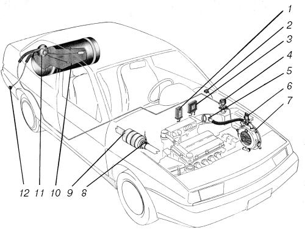
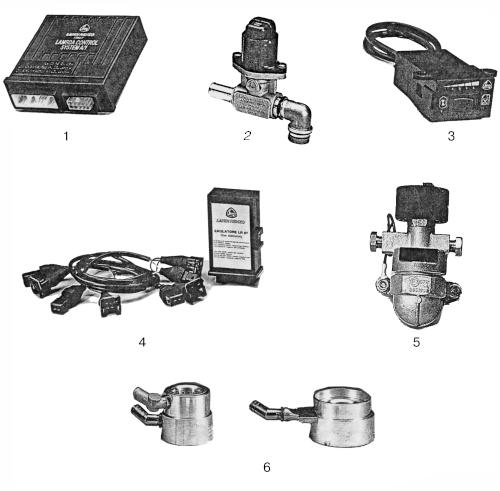
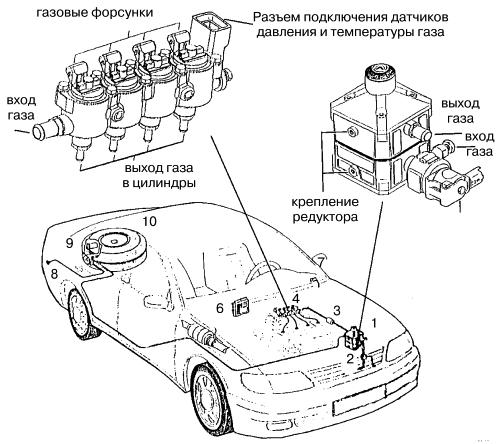

Система «Landi Renzo» (Италия).
Эти газобаллонные системы хорошо работают на автомобилях «Жигули» и «Волга» с впрысковыми двигателями. В Москве их представляет компания АВТ («Эй-Би-Ти»).

Рис. 44. Схема установки на автомобиль газовой аппаратуры «Landi Renzo»: 1 – эмулятор форсунок; 2 – переключатель вида топлива; 3 – электронный блок управления; 4 – электромагнитный газовый клапан; 5 – газосмесительное устройство; 6 – электрический дозатор газа; 7 – редуктор-испаритель; 8 – лямбда-зонд; 9 – нейтрализатор; 10 – газовый баллон; 11 – запорно-предохранительная арматура; 12 – выносное заправочное устройство.
Газ, заправленный в баллон (10) (рис. 44), через выносное заправочное устройство (12) выходит из баллона в жидком состоянии через блок запорно-предохранительной арматуры. По магистральному трубопроводу газ поступает к газовому электромагнитному клапану (4), который находится в отсеке двигателя. Этот клапан пропускает газ в редуктор-испаритель (7) только при включенном зажигании и только тогда, когда переключатель вида топлива (2) находится в положении «Газ». Клапан снабжен фильтром, очищающим газ от посторонних взвесей и загрязнений.
Далее очищенный сжиженный газ при ступенчатом падении давления и подогрева в редукторе-испарителе переходит в газообразное состояние. Из редуктора паровая фаза газа поступает в газосмесительное устройство (5) (смеситель), расположенное в воздуховоде перед дроссельной заслонкой, где образуется газовоздушная смесь.
Количество газа, подаваемого в смеситель, изменяется в зависимости от режима работы двигателя с помощью дозатора газа (6), установленного на выходе редуктора-испарителя. Управляет дозатором электронный блок (3), получающий информацию о составе отработавших газов и режиме работы двигателя от лямбда-зонда (8), датчиков положения дроссельной заслонки и частоты вращения коленчатого вала. На основании этих данных блок управления подает газ строго в количестве, необходимом для поддержания наилучшей динамики автомобиля, минимального расхода топлива и наименьшего выброса вредных веществ с отработавшими газами.
Во время работы двигателя на газе эмулятор (1) отключает форсунки, одновременно генерируя для блока управления двигателем сигнал, имитирующий их работу. Это сделано, для того чтобы блок управления не отключил систему зажигания, ошибочно предположив, что в цепи питания форсунок появилась неисправность.
Внешний вид элементов системы «Landi Renzo» показан на рис. 45.

Рис. 45. Основные элементы системы «Landi Renzo»: 1 – электронный блок управления LCS – A/1; 2 – электрический дозатор газа; 3 – двухпозиционный переключатель вида топлива с указанием уровня газа в баллоне; 4 – эмулятор форсунок с соединительным кабелем; 5 – газовый электромагнитный клапан; 6 – газосмесительное устройство для приготовления топливовоздушной смеси.
Электронный блок управления (1) обрабатывает сигналы от лямбда-зонда системы зажигания, датчика положения дроссельной заслонки и хранит в памяти значения напряжения на лямбда-зонде, соответствующие стехиометрическому составу смеси, который должен обеспечиваться при любом режиме работы двигателя. Лямбда-зонд (8) рис. 44 контролирует состав отработавших газов в выпускном трубопроводе и постоянно посылает электронному блоку управления сигнал в виде переменного напряжения. Блок проверяет правильность состава смеси, сравнивая полученный сигнал со значениями, хранящимися в его памяти. Если есть различие, блок с помощью шагового электродвигателя изменяет проходное сечение в дозаторе газа (б) рис. 44, (2) рис. 45 до тех пор, пока состав смеси не вернется к стехиометрическому значению (l=1).
Дополнительная функция блока управления – эмуляция лямбда-зонда, т. е. имитация в режиме работы на газе нормального сигнала этого датчика, предназначенного для работы на бензине.
Блок управления выполняет также функцию диагностики системы и может быть перепрограммирован. Эта операция осуществляется с помощью специального тестера-программатора, поставляемого фирмой в систему профессионального сервиса.
Кроме того, электронный блок управления обеспечивает пуск двигателя только на бензине, автоматически отключая подачу газа, а также с помощью переключателя (2) позволяет в любой момент перейти на желаемый вид топлива без остановки двигателя.
Двухпозиционный переключатель (3) рис. 45 со светодиодной индикацией показывает используемый вид топлива и уровень сжиженного газа в баллоне.
Эмулятор (4) рис. 45 во время работы двигателя на газе перекрывает подачу бензина и имитирует для основного блока управления двигателем работу форсунок. Он подключается к системе специальным кабелем.
Модуль эмулятора для каждого автомобиля подбирают в зависимости от установленной на нем системы впрыска.
Газовый электромагнитный клапан (5), расположенный между баллоном и редуктором-испарителем, – это устройство, перекрывающее подачу газа при работе на бензине и при выключении зажигания. Он совмещен с газовым фильтром.
Газосмесители (6) – это устройства, в которых используется эффект трубки Вентури. Они обеспечивают пропорциональное смешивание воздуха с газом на всех режимах работы двигателя. Для каждого конкретного двигателя разработан свой смеситель таким образом, чтобы вместе с редуктором и электронным блоком управления он был оптимален для работы на газе и не оказывал заметного влияния при работе на бензине.
Особенности системы «Landi Renzo» «OMEGAS»
Итальянская фирма «Landi Renzo» «OMEGAS» приняла новую стратегическую программу по снижению расхода топлива и выпуску экологически чистых транспортных средств, двигатели которых работают и на бензине, и на газе. В разработанной фирмой новой системе (рис. 46), чтобы переключить двигатель с бензинового режима на газовый, пользуются, как обычно, переключателем вида топлива. Газовые форсунки, расположенные над каждым цилиндром, способны реагировать на команды ЭБУ за миллисекунды.

Рис. 46. Схема установки на автомобиль системы «OMEGAS»: 1 – редуктор-испаритель; 2 – датчик температуры охлаждающей жидкости; 3 – фильтр паровой фазы газа; 4 – газовые форсунки; 5 – ЭБУ подачи газа; 6 – переключатель вида топлива с указанием уровня газа в баллоне; 7 – выносное заправочное устройство; 8 – запорно-предохранительная арматура; 9 – тороидальный баллон; 10 – редуктор с газовым клапаном.
Ниже изложен принцип работы системы.
Газ поступает в редуктор (1) (рис. 46) через блок с газовым клапаном (10) (жидкая фаза). На выходе из редуктора (1) испаренный газ под давлением, примерно равным атмосферному, поступает в блок газовых форсунок (4) через фильтр (3).
Все сигналы от датчиков двигателя и бензиновых форсунок попадают на ЭБУ. Отсюда на газовые форсунки подается сигнал – «провести впрыск газа в цилиндры».
В момент, когда должна происходить подача бензина в определенный цилиндр, именно в этот цилиндр подается газ.
Следует заметить, что данная система может быть смонтирована только на профессиональной сервисной станции, так как электронный блок программируется под конкретную марку автомобиля.
Официальный представитель и поставщик оборудования «OMEGAS» – компания АВТ (Эй-Би-Ти).